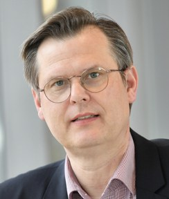

Über mich
Tomas Hecker
Elektriker, Erfinder und Gründer. Seit über dreißig Jahren entwickle ich Technik, die Gebäude behaglicher und sparsamer macht. In „Schuldenfrei 2070“ wende ich denselben Blick auf unser Steuersystem an.
Warum ein Techniker über Steuern schreibt
Mein ganzes Berufsleben lang hat mich eine Frage begleitet: Welche Lösung ist über ihre ganze Lebensdauer die beste, und nicht nur beim Kauf? Ich stelle mir dafür alle denkbaren Lösungen wie in einem Raum mit vielen Dimensionen vor: Anschaffung, Energie, Wartung, Nachhaltigkeit, Sicherheit und Komfort. In diesem Raum suche ich die Lösung, die über den ganzen Lebenszyklus am wenigsten kostet und dabei alle Anforderungen erfüllt. Das ist nicht automatisch die teurere Anlage, oft ist es sogar die günstigere. In einem meiner Projekte hat die Halbierung der Anschaffungskosten zugleich die Betriebskosten um 80 % gesenkt. Möglich wird das nur, wenn man das Ganze sieht: Lüftung, Heizung, Kälte und die Dimensionierung der Rohre haben jeweils ihr wirtschaftliches Optimum, und alles hängt miteinander zusammen. Die beste Lösung entsteht erst, wenn man die Gewerke gemeinsam plant. Dafür habe ich im VDI die Richtlinie VDI 4703 zur lebenszyklusorientierten Beschaffung mitentwickelt und den Fachausschuss dazu geleitet.
Genau so schaue ich auf unser Steuersystem. Es soll nicht nur im nächsten Haushaltsjahr aufgehen, sondern über Jahrzehnte tragen, wenn Künstliche Intelligenz und Automatisierung die Arbeitswelt verändern. Und es soll einfach genug sein, dass man es nachrechnen kann. Deshalb gibt es zum Buch ein Rechenmodell und den Steuerrechner. Dazu kommen Rechner für Haushalte: E-Auto oder Verbrenner, Wärmepumpe, Gas oder Öl und der Energie-Rechner für PV, Speicher, Wärmepumpe und E-Auto.
Was mein Weg mit dem Buch zu tun hat
- Aufstieg durch Bildung: Ich habe mit der Mittleren Reife und einer Lehre zum Elektroinstallateur angefangen. Später kamen Weiterbildungen und Studienjahre in Gebäude- und Energietechnik neben dem Beruf dazu. Dass Leistung und Lernen sich lohnen müssen, ist für mich keine Theorie.
- Gründen und Wagen: Mit Mitte zwanzig habe ich meine erste Firma gegründet und Wärmepumpen entwickelt, gebaut und verkauft. Ich weiß, wie schwer der Anfang ist und wie viel Eigenkapital dabei zählt. Daher kommt der Vorschlag im Buch, Gründern 50 % auf ihr Erspartes dazuzugeben.
- Technik als Chance: Ich habe erlebt, wie Software Arbeit verändert: Eine meiner Entwicklungen erzeugt aus einer Raumsimulation automatisch Zeichnungen, Maschinendaten und Bestellungen. So etwas macht mir keine Angst, sondern Mut, wenn der Gewinn daraus bei allen ankommt.
Beruflicher Weg
- seit 2019Senior Consultant, Etanomics Service GmbHEnergieberatung und Effizienzprojekte für Industrie und Gewerbe, im In- und Ausland. etanomics.com
- seit 2014Gründer der HeCoAir GmbHIdeen, Prototypen und Konzepte für neue Lüftungstechnik
- 2017 – 2019Senior-Fachplaner Gebäudetechnik, ATP architekten ingenieureIntegrale Planung von Gebäuden
- 2010 – 2017Leiter Produktmanagement Kühldecken, Barcol-Air AG (Schweiz), danach Entwicklungsleitung bei TROX HESCOEntwicklung eines patentierten Hybrid-Deckenmoduls, das Heizen, Kühlen, Akustik und Lüftung in einem Element vereint, samt Software von der Simulation bis zur Fertigung
- 2004 – 2010Produktmanager, AL-KO Therm GmbHEntwicklung des patentierten „AirQualitizer“, der die Raumluft erstmals nach Luftqualität regelt, und der Software „LCC Optimize“ für Lebenszykluskosten von Klimaanlagen
- 2001 – 2004Technischer Vertrieb, ROX Lufttechnik GmbHLösungen für Planer, Krankenhäuser und Industrie
- 1994 – 2000Geschäftsführender Gesellschafter, EcoSolar Energietechnik GmbHEntwicklung, Bau und Vertrieb von Wärmepumpen-Heizungen, mehrere Patente, Innovationspreis 1999
- 1986 – 1994Lehre und erste BerufsjahreAusbildung zum Elektroinstallateur und Energieanlagenelektroniker in Bremen, danach eigene Werksvertretung für Heizsysteme
Veröffentlichungen
Zwei Fachbücher (2009): „Energieeffiziente Gebäudeklimatisierung: Raumluft in A++-Qualität“ und „Gebäudeautomation: Die unsichtbare Effizienz“. Dazu Fachartikel und zahlreiche Vorträge auf Fachtagungen, unter anderem beim VDI, auf der ISH und der Deutschen Kälte-Klima-Tagung. 2026 erscheint „Schuldenfrei 2070“.
Privat
Ich bin Vater von zwei Söhnen, die mich sportlich immer wieder herausfordern, und engagiere mich ehrenamtlich in meiner Kirchengemeinde. Ich arbeite gern mit anderen zusammen, vermittle und vernetze, und am liebsten entwickle ich Lösungen, die es vorher noch nicht gab.
„Schuldenfrei 2070“ und diese Seite sind ein privates Projekt. Sie geben meine persönliche Meinung wieder, nicht die meines Arbeitgebers. Kontakt: tomas.hecker@me.com